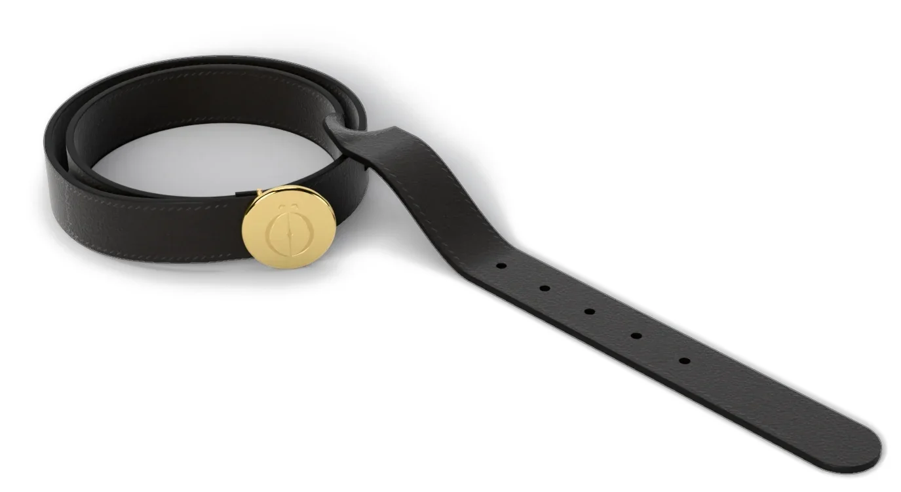
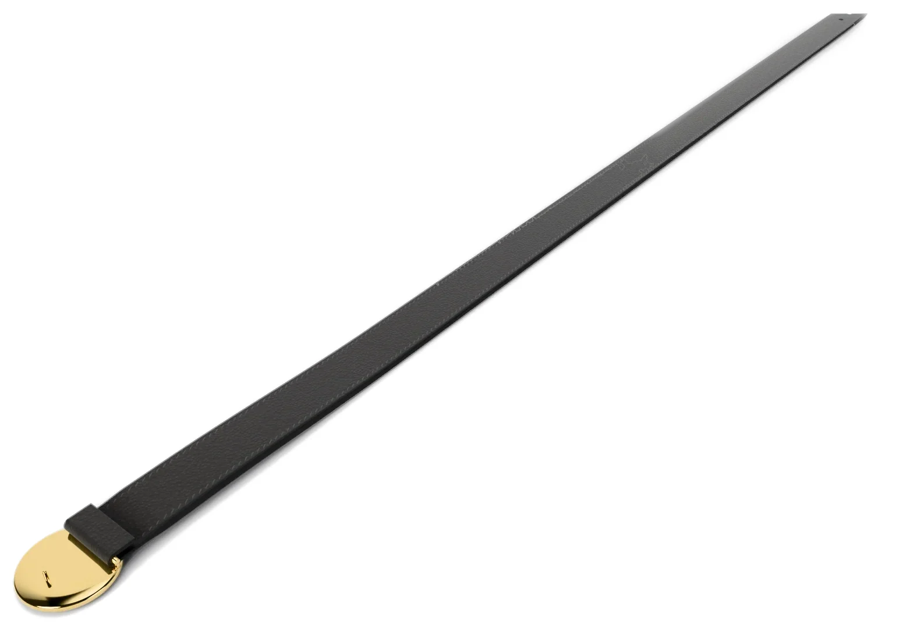
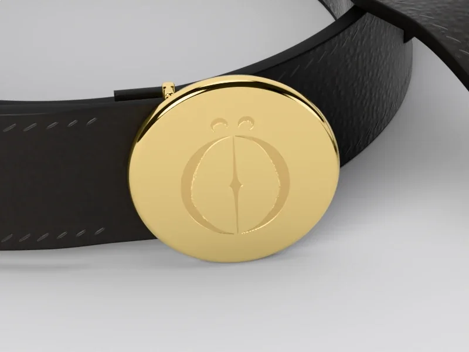
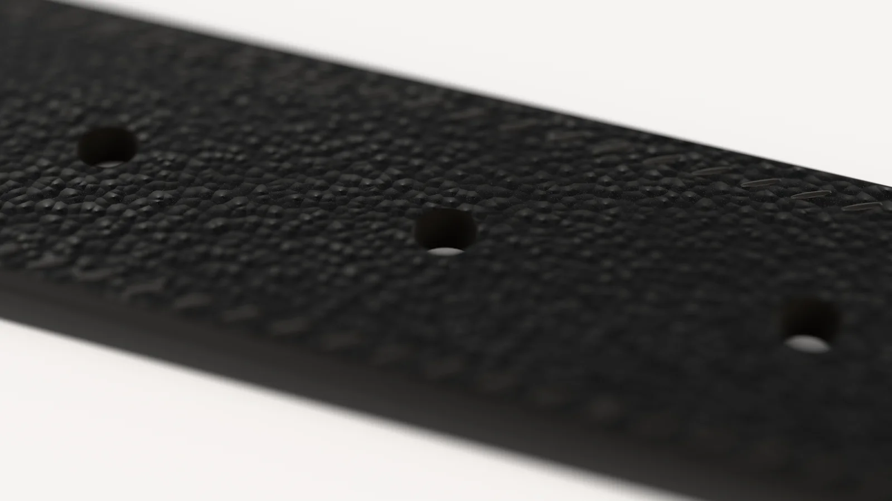
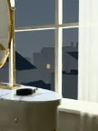

STAND-IN · img/coaraci/front/master.* (departments/apparel/new-pieces-2026-11/build/disc-belt/site/disc_belt_front_16k.png; 16K, 15360 × 8640)
STAND-IN · img/coaraci/straight/master.* (straight view, 8K; 8K, 7680 × 4320)
STAND-IN · img/coaraci/detail-disc/master.* (the disc, 8K close-up; 8K, 7680 × 4320)
Chapter I · Accessories
Coaraci
Belt
Three centimetres of black calfskin and one brass disc, the Ö engraved where the light falls on it.
- LEATHER
- BLACK CALFSKIN, 3 CM
- BUCKLE
- BRASS DISC, THE Ö ENGRAVED
Price on request
ReserveMade to order. Delivery date confirmed by email.
Delivered in the house box.
Details
- Made to order
- Made to order. We email your delivery date once production is confirmed. Cancel for a full refund any time before production starts.
- Returns
- Exchanges within 14 days of delivery, unused and with tags. Returns
- Care
- Wipe with a soft dry cloth. Keep from rain and heat; if it gets wet, let it dry slowly away from a radiator. Store in its dust bag, stuffed with tissue, out of the light. Leather cleaning by a specialist only. Care
- Size
- The measurements

STAND-IN · img/coaraci/world/master.* (C12: the last frame, the world plate (the suite, at first light); 8K, 5760 × 7680)Where it is going · C12
The suite, at first light
The curtain drawn back on one side.
On the screen in the film, the picture is tomorrow: each piece in the place it is going, with one place kept for someone.
The maker’s notes
Coaraci, the disc belt
- It begins as two layers of black calfskin: 30 mm wide, 3.6 mm thick, 105 cm from bar to tip.
- It is stitched 3.0 mm in from each edge, a stitch every 3.5 mm, and the edges are painted.
- Five holes are punched, 4.5 mm across, 25 mm apart, the first 90 mm from the tip.
- It closes on a brass disc, 40 mm, the mark engraved 26 mm tall.
Behind it: a 2.4 mm brass bar on two posts and a 1.5 mm prong. From the front, the disc is all there is.
Read the poem